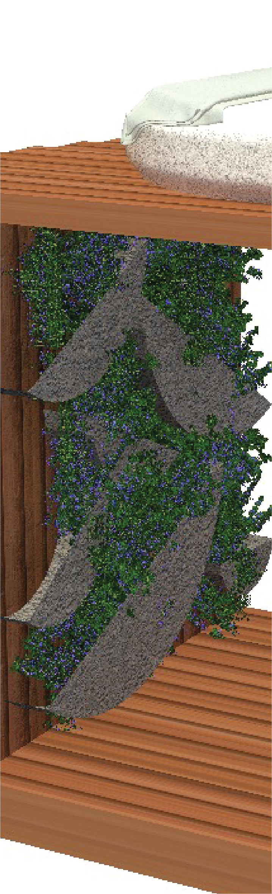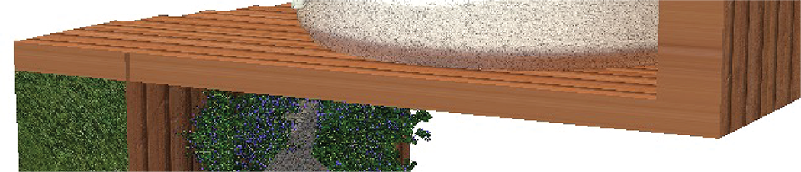
Cube Space
:Taking away walls while still creating the most efficient use of the space.
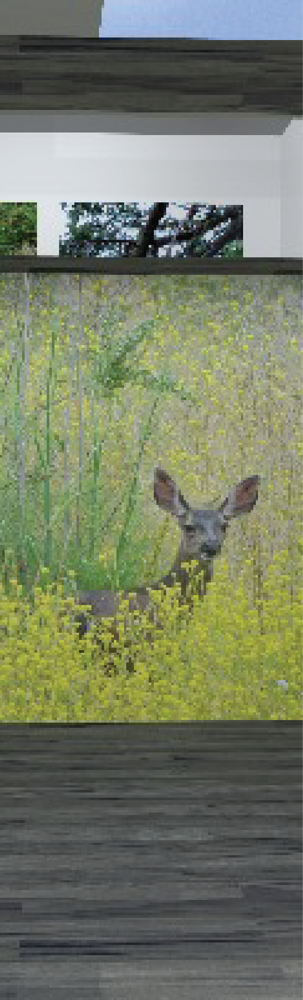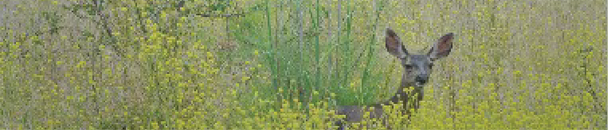
Hideaway
: A tucked away oasis that allows for meditative thoughts of tiny moments in life.
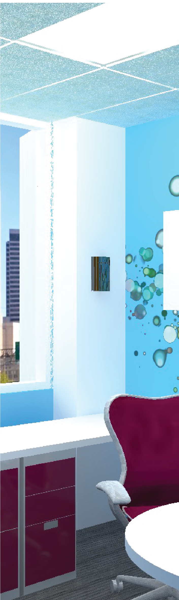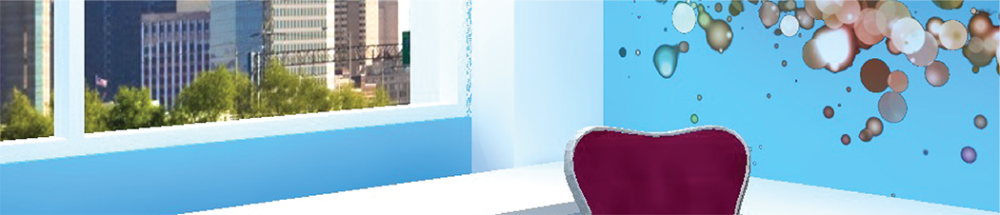
Office Space
: Creating a personalized enclosed space that uses artifical lighting in a computer program.
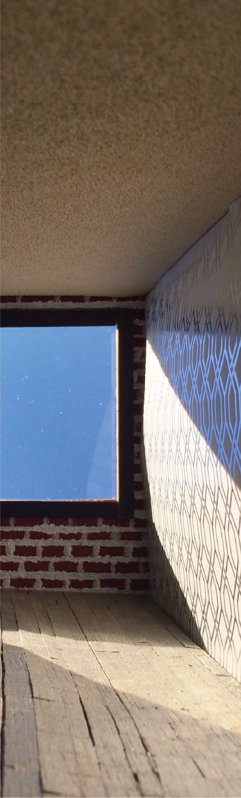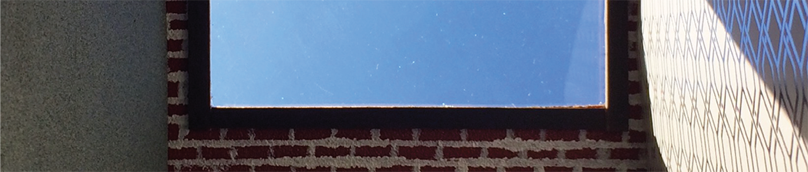
Daylighting
: Experimentation on a controlled space with variations in daylighting and materials used.
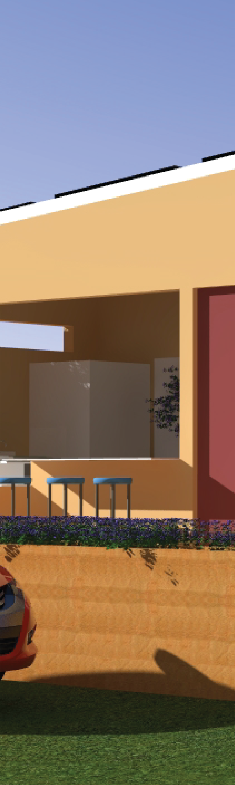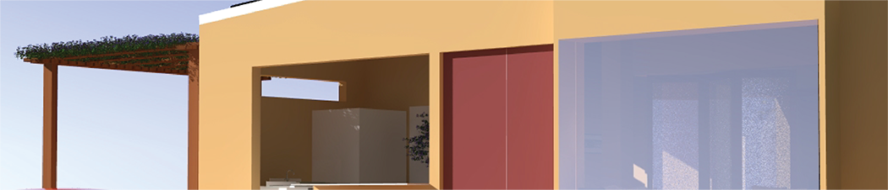
Solar House
: A zero net energy house that runs off 35 gallons of water with four people living in it.
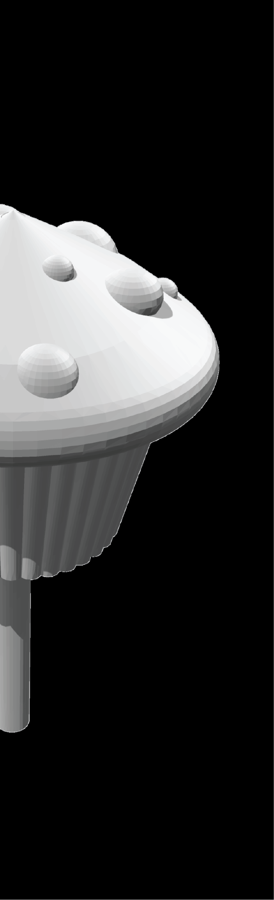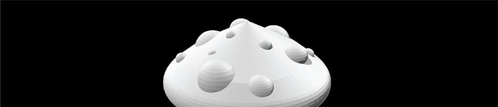
Muffin Top
: Creating a muffin top that can functionally spin when 3D printed.